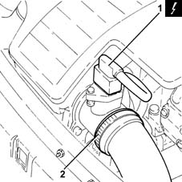
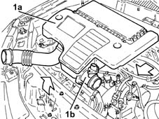
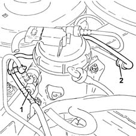
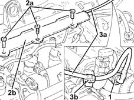

1040B54 fuel line from manifolds - r r
- Path
- Procedures > 10 ENGINE > 1040 FUEL TANK AND PIPES > 1040B fuel supply/return circuit pipe > 1040B54 fuel line from manifolds - r r
- Kind
- repair procedure (removal / refitting; the operation number is the code)
- Applies to
- engines: 1.3 JTD; all production periods
- Interactive page
- https://sloeber94.github.io/elrnDB-lYpsln/en/#/2429020
Applies to: engines: 1.3 JTD; all production periods
 Removing
Removing
 Refitting
RefittingEnsure that the ignition key is in OFF position, then disconnect the battery negative terminal (-).
 | Name | Connector |
|---|---|---|
- | Battery |
1. Disconnect the electrical connection from the air flow meter.
| Name | Connector |
|---|---|---|
1 | Air flow meter |
2. Loosen the band and disconnect the the turbocharger air inlet sleeve from the rigid pipe, air flow meter side.

Applies to: engines: 1.3 JTD; all production periods
1. Remove the air filter (1a) complete with air flow meter (1b) by releasing from the underlying pins and then from the rear fastenings.

Applies to: engines: 1.3 JTD; all production periods
Undo the fuel filler cap and remove it to discharge the pressure in the system.
1. Disconnect the quick-release connector for the front fuel return pipe, fuel filter side.
2. Disconnect the rapid attachment for the front fuel return pipe, rear fuel return pipe side.

Applies to: engines: 1.3 JTD; all production periods
1. Disconnect the rapid attachment on the front fuel return pipe, single fuel manifold pipe side.
2. Undo the bolts (2a) and open the pipe passage channel (2b).
3. Remove the front fuel return pipe (3a) after releasing it from the bands (3b).

Applies to: engines: 1.3 JTD; all production periods
Refitting
RemovingPlace the front fuel return pipe back in its housing and fix it using the bands.
Close the pipe passage channel and secure it with the bolts.
Connect the rapid connector for the front fuel return pipe, rear fuel return pipe side.
Connect the quick-release connector for the front fuel supply pipe, fuel filter side.
Connect the rapid attachment of the front fuel return pipe, single fuel manifold pipe side.
Replace the air filter, complete with air flow meter, in its housing.
Connect the air intake sleeve to the turbocharger, air flow meter side, and tighten the band.
Connect the electrical connection to the air flow meter.
Connect the negative (-) battery terminal.